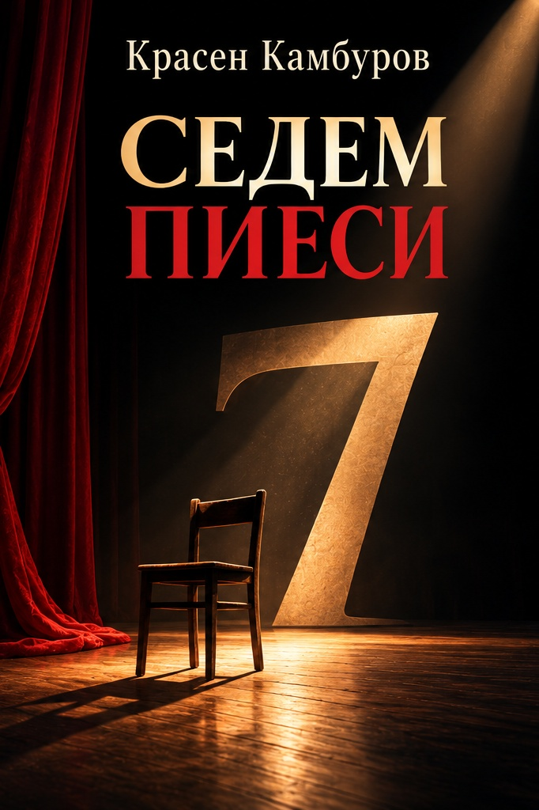

Драматургия · 2014 · Красен Камбуров
Седем пиеси
Седем драматургични произведения — седем погледа към човека, времето и неговите маски.
Подготвя се първо електронно издание · София, 2026 · PDF и EPUB · ISBN в процедура

За книгата
В сборника
- „Беба“ (1999)
- „Жадувани от птиците“ (1999)
- „Всеки пет лета“ (2000)
- „Глина“ (2010)
- „Календи нула“ (2013)
- „Като куче“ (2013)
- „Спонтанно“ (2013)
Електронно издание
Подготвени са електронни формати PDF и EPUB. Очакваме присъждане на нов издателски код и отделни ISBN номера; файловете за свободно четене ще бъдат публикувани след приключване на издателската проверка.
Художествено оформление на корицата: създадено с помощта на генеративен изкуствен интелект, по концепция и с редакторски подбор на издателя.
Към наличните електронни издания ↗Още от Красен Камбуров
Към всички книги ↗